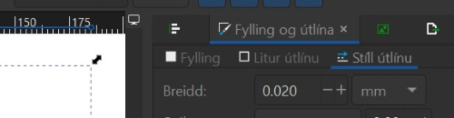
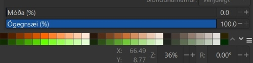

9. bekkur
Að nota Inkscape forritið
Inkscape forritið
Við ætlum að nota forrit sem heitir Inkscape. Með því getum við hannað ótrúlega margt, til dæmis límmiða sem hægt er að skera út úr vínyl í vínylskera. Við getum líka hannað eitthvað til að skera og rastera í laser.
Að opna Inkscape
Ef þið sjáið ekki táknið getið þið skrifað Inkscape í leitargluggann neðst á skjánum.

Tvísmellið á táknið
Tvísmellið svo á táknið þegar þið sjáið það. Stundum er forritið lengi að opnast svo það er gott að bíða smástund til að sjá hvort það opnist. Annars tvísmellið þið aftur.

Að skipta um tungumál í Inkscape
Íslenska eða annað tungumál
Það er hægt að skipta um tungumál í Inkscape en það þarf að loka forritinu þegar búið er að skipta um tungumál og opna forritið svo aftur. Smellið á Breyta og svo Kjörstillingar. Hér fyrir neðan sjáið þið hvernig þetta lítur út þegar forritið er stillt á íslensku og þegar það er stillt á ensku.


Íslenska eða annað tungumál - framhald
Því næst smellið þið á Viðmót (á ensku er það Interface) og þá sjáið þið hvar þið getið valið tungumál. Munið svo að loka forritinu og opna það aftur.


Að vista verkefnin á réttum stað
Að búa til möppu
Búðu til möppu fyrir þig ef þú átt ekki möppu
-
Smelltu á gula möpputáknið neðst á skjánum.
-
Smelltu svo á Desktop.
-
Næst smellir þú á Fab Server táknið sem er eins og gula mappan nema með grænum lit líka.
-
Smelltu á Grunnskólar 2025.
-
Smelltu á Verkvit.
-
Hægrismelltu á skjáinn og veldu Nýtt (New) og svo Mappa (Folder)
-
Merktu möppuna með þínu nafni.
-
Ath! Best er að vista oft á meðan þú vinnur verkefnið, svo upplýsingar glatist ekki.

Að velja rétta möppu þegar vistað er í Inkscape
Vistaðu Inkscape verkefnin þín í réttri möppu
Þegar þú vistar verkefnin skaltu passa að þau séu að vistast í þinni möppu en ekki möppu sem einhver annar á. Þú gerir þetta svona:
-
Farðu í Skrá (File) og veldu Vista sem (Save As).
-
Veldu möppuna sem þú vilt vista verkefnið í.
-
Smelltu á Vista (Save).
-
Ath! Best er að vista oft á meðan þú vinnur verkefnið, svo upplýsingar glatist ekki.
Verkefni 1 - Límmiði
Hvaða aðferð finnst þér best?
Hvort finnst þér betra að lesa leiðbeiningar eða horfa á kennslumyndband? Veldu annaðhvort Skriflegar leiðbeiningar eða Kennslumyndband hér fyrir neðan.
Skriflegar leiðbeiningar - Límmiði
Skriflegar leiðbeiningar um gerð límmiða
Farið eftir leiðbeiningunum hér. Lesið samt fyrst upplýsingarnar hér fyrir neðan. Leiðbeiningarnar gerði Hafey Viktoría Hallgrímsdóttir hjá Fab Lab Reykjavík.
Tvö mikilvæg atriði
Munið að vista verkefnið reglulega með því að ýta á Skrá og Vista eða File og Save. Þið getið líka vistað með því að halda inni CTRL takkanum og ýta á bókstafinn S
Athugið að vista verkefnið í lokin bæði sem Inskcape skjal (með endingunni .svg) og PDF skjal (með endingunni .pdf).
Eitt mikilvæg atriði til viðbótar
Þegar hönnunin er tilbúin er blaðsíðan oft stærri en það sem þið ætlið að búa til. Þá er gott að minnka blaðsíðuna til að efnið nýtist betur. Það gerið þið svona:
Smellið á Skrá (File) og Skráareiginleikar (Document Properties). Það er líka hægt að hægrismella á skjáinn og velja Eiginleikar skjals (Document properties). Smellið svo á litla hnappinn hægra megin við Aðlaga stærð að innihaldi (Resize to content). Þá minnkar hvíta svæðið þannig að það passar nákvæmlega utan um hönnunina. Svo þarf að stækka það aðeins með því að smella þrisvar sinnum á báða plúsana.

Mismundandi útlit í tölvum
Stundum lítur þetta öðruvísi út í tölvum (sjá hér fyrir neðan). Þá þarf að skrifa 1 í alla fjóra gluggana og smella svo á ,,Laga síðu að teikningu eða vali“ (Resize page to content).

Kennslumyndband - límmiði
Myndband
Myndbandið hér hér sýnir hvernig límmiði er búinn til. Leiðbeiningarnar gerði Andri Sæmundsson hjá Fab Lab Reykjavík

Munið að vista verkefnið reglulega með því að ýta á Skrá og Vista eða File og Save. Þið getið líka vistað með því að halda inni CTRL takkanum og ýta á bókstafinn S.
Athugið að vista verkefnið í lokin bæði sem Inskcape skjal (með endingunni .svg) og PDF skjal (með endingunni .pdf).
Verkefni 2 - Tinkercad
Að fara inn á Tinkercad
Smellið á hlekkinn hér. Smellið á græna hnappinn (join with login code) og skrifið notendanafnið ykkar. Notendanafnið er nafnið ykkar og eftirnafnið - allt með lágstöfum (litlum stöfum) og ekkert bil á milli nafnanna. Ef þið heitið tveimur nöfnum eða fleirum eigið þið bara að nota fyrsta nafnið og svo eftirnafnið.
Skriflegar leiðbeiningar - Tinkercad
Leiðbeiningar í bók
Smellið á hlekkinn hér. Lesið blaðsíðu 6 og vinnið svo verkefni 1 sem byrjar á blaðsíðu 7. Það kallast Smíðum kofa.
Kennslumyndband - Tinkercad
Kennslumyndband
Smellið á hlekkinn hér. Þetta er sama verkefnið og er í bókinni.
Verkefni 3 - lyklakippa
Skriflegar leiðbeiningar - lyklakippa
Leiðbeiningar um gerð lyklakippu
Farið eftir leiðbeiningunum hér. Leiðbeiningarnar gerði Hafey Viktoría Hallgrímsdóttir hjá Fab Lab Reykjavík.
Athugið að þið þurfið að hafa gatið stærra en það sem gert er í leiðbeiningunum svo lyklakippuhringirnir okkar passi í það. Hafið það 4mm en ekki 3mm.
Kennslumyndband - lyklakippa
Kennslumyndband um gerð lyklakippu
Farið eftir leiðbeiningunum hér. Leiðbeiningarnar gerði Andri Sæmundsson hjá Fab Lab Reykjavík.

Verkefni 4 - verkefni að eigin vali
Verkefni að eigin vali
Þið megið meðal annars búa til fleiri límmiða eða litla muni í laserskeranum.
Kom upp vandamál?
Hönnunin hverfur þegar ég stilli línuþykktina á 0,02mm
Fyrsta athugun
Haltu niðri CTRL takkanum og snúðu músarhjólinu. Með því ertu að þysja inn þar sem músin þín er staðsett (örin á skjánum). Passaðu því að hafa músina þína á hönnuninni þinni. Sérðu línurnar þegar þú þysjar inn? Það er vegna þess að þær eru svo örmjóar að þær sjást varla þegar þær eru stilltar á 0,02mm. Ef þú sérð línurnar núna er allt í góðu og þú getur haldið áfram með það sem þú þarft að gera.
Athugaðu þetta ef þú sást ekkert við fyrstu athugun
Athugaðu hvort það stendur 0,020 eða 0.000 í reitnum þar sem þú breyttir línunni. Ef það stendur 0.000 skaltu prófa að nota punkt en ekki kommu þegar þú skrifar aftur 0.020. Í sumum tölvum þarf að nota punkt. Vonandi birtist hönnunin þín við þetta.
Kannski gleymdir þú bara að stilla stíl útlínu (stroke style) á 0,02. Kannski minnkaðir eða stækkaðir þú hönnunina eftir að búið var að stilla línuþykktina. Þá breytist þykktin á línunni. Mundu því að stilla alltaf línuþykktina upp á nýtt ef þú breytir stærðinni á einhverju í hönnuninni.

Ekkert gerist þegar form er teiknað í Inkscape
Fyrsta athugun
Staðsettu músina þína aðeins fyrir ofan og til vinstri við svæðið sem þú varst að teikna á. Haltu músarhnappnum niðri og dragðu músina á ská niður yfir allt svæðið sem þú teiknaðir á. Þannig ertu að veiða formið/velja það. Smelltu svo á Hlutur og svo Fylling og útlína. Kveiktu á fyllingunni svona:
Birtist formið núna? Það er vegna þess að það var slökkt á fyllingunni og línunni en núna er kveikt á fyllingunni.

Athugaðu þetta ef þú sást ekkert við fyrstu athugun
Athugaðu hvort það er búið að stilla ógegnsæi(opacity) á 0. Þá þarf að draga stikuna upp í 100%. Þú finnur þessa stiku neðst til hægri í Inkscape.
Birtist formið núna? Það er vegna þess að liturinn var gegnsær en núna er hluturinn ekki gegnsær lengur.

Þriðja athugun
Athugaðu hvort það er búið að stilla Alpha (Alpha channel) á 0. Þá þarf að draga stikuna upp í 100%. Þú finnur þessa stiku neðst undir stillingunum fyrir liti bæði undir flipanum fyrir fyllingu og lit útlínu í Inkscape. Hún er merkt með bókstafnum A.

Vélin sker ekki skurðarlínurnar
Fyrsta athugun
Opnaðu hönnunina þína í Inkscape. Veldu hönnunina. Smelltu á Hlutur og svo Fylling og útlína. Smelltu á flipann sem er merktur sem Stíll útlínu (stroke style). Athugaðu hvort línuþykktin er stillt á 0.02mm. Ef talan er önnur þarftu að breyta henni í 0.02. Svo þarftu að vista þetta aftur sem PDF skjal. Ef þú færð meldingu um að það sé ekki hægt, getur verið að gamla PDF skjalið sé enn opið. Þú þarft að loka því svo það sé hægt að vista breytingarnar.
Athugaðu þetta ef þú sást ekkert við fyrstu athugun
Athugaðu hvort það er búið að stilla ógegnsæi(opacity) á 0. Þá þarf að draga stikuna upp í 100%. Þú finnur þessa stiku neðst til hægri í Inkscape.
Vélin vill alls ekki nota línur með gegnsæi, jafnvel þó ógegnsæi (opacity) sé bara pínulítið og næstum því 100%, til dæmis stillt á 99%, er það nóg til að vélin geti ekki skorið línuna. Passaðu því að skurðarlínur séu alltaf stilltar á 100%.